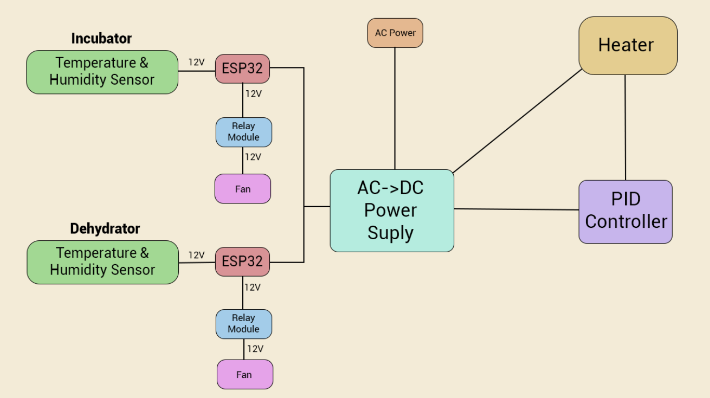

fabacademy
challenge 2

idea & purpose
We were all interested in different things but had a common topic, which we used to make a product together. For example the Slow lab (Audrey and me), wanted to have a dryer to preserve food without a big amount of electricity. So we want to use the dehydrator to use the warmth of the electronic or the solar part to dry things like food/ beer spend grains etc.. The other part of our group were more interested in doing an incubator. Incubators need less warmth than dehydrators, so we thought about reusing the energy twice, while putting the incubator on the top so the warm temperature could raise until there.

concept: hot box
The Hotbox draws heat from the sun and concentrates it in order to dry foods, like fruits and vegetables, so they can be stored for long periods of time. Running on solar power makes this food dryer efficient and inexpensive. Additionally it uses the leftover heat of the dehydrator box to provide a stable, warm, and sufficiently humid environment for microorganisms in an incubator. The Hotbox also features a heater that will supplement the solar heat in case the temperature dips. The purpose of the Hotbox is to provide an easy to assemble and reproduce alternative to energy costly dehydrators and incubators, utilising as much as possible the energy of the sun while monitoring the temperature and the humidity of the boxes to guarantee the efficiency of the devices. Inspiration
fabrication: electronics
We decided to put all the main controller electronics parts in an independent modular box of the “Hotbox”, under the dehydrator and the incubator, because we want to be able to exchange solar module parts when we use it outdoors.
We address the function of the electronics in two parts. The Warmth System is managed by a PID controller and the temperature pad, which contains a PID controller. (AC 220V) and a heat pad. 12V - 5A. The Cooling System is managed by the microcontroller ESP32 with the temperature and humidity sensor DHT11, a relay, a fan, a power supply, and wires. The cooling system contains: ESP32 Arduino Board. 3.3 V, DHT11 Digital Temperature Humidity Module Sensor. 5V, Relay Module, Fan. DC12V - 0.28A and a AC-DC Power Supply 12V - 16.7A.
The initial idea on day 1 was: we are going to heat the base module and position a fan in that same module to push the hot air to the upper boxes. Point of attention: For the choice of the power supply, first check all the components you are going to use to see how much Amps they need, then choose the power supply accordingly. In our case we also needed a voltage converter as the power supply we had provided 12V (which was good to power the heat mat and the fans) but the ESP32 only needed 3,3V. As we didn’t have any, for a first version we decided to power them separately. But in day 2 we changed the position of the fans and head bed. As the incubator and the dryer need different temperature and humidity conditions, we decided to regulate the temperature in each box by using the fans to cool them down. The heat bed would still be positioned in the base module box and would be set up manually to the target temperature with a PID and there would be one temperature & humidity sensor and a fan in each box (dryer and incubator) to regulate. Then we start wiring the components and programming the microcontroller: We used a relay between the power supply, the fan and the microcontroller to be able to control when the fan turns on or off . The last day we finish wiring the final the right sensors, two temperature & humidity DHT11 sensors. After installing the library DFRobot_DHT11, we finish creating the logic diagrams for both the dryer and the incubator modules (see diagram image) after managing to make the circuit work for a simple test condition. Then we program the conditions in two different files for the dryer module and the incubator module. Once everything was tested and working, we removed the breadboard, soldered the connections that could be assembled and joined positive & negative connections in a connector.
fabrication: laser cutter

My main part was to create the model together with Julia, create the g-codes and manage the CNC milling. Also I helped designing the electronics with Audrey. Our goal was to not using the glue, make all parts modular, multifunctional and easy to assembly. We used Rhinoceros and Fusion to make the 3D modell and then used Rhino Cam to create the G-codes and set up the CNC machine. So first we we made a prototype out of cardboard, then we designed the whole model. The we next all items with little spaces and define how deep every file/part/hole should be milled. Then we set up the speed/ feed/ properties/ order etc for the CNC machine. Then we create 1. The screw G-code (which includes the holes for the screws on the board to fix it to the machine), then the 2. G-code with all the actual milling parts. In the machine we set up first the x, y and z axes ann uploaded the 1. G-code, screwed the screws, uploaded the 2. G-code and milled everything, we had over 70 files on the first board and already were 4 hours milling. After milling we needed to sand everything. Then we assembly everything. Full Website
our feedback
considerations 1.Cut the pieces before sending the complete file to the CNC machine to test the tolerance, and avoid the possibility of sanding after. There was no time to do this due to the line for using the machine and the time it requires to cut. 2.Estimate better the time, and organize better the time. 3.The design process in Rhino7 was developed mostly for one person, it would be interesting to share in real time the process, in order to optimize the time of designing. 4.More intermediate team check-ups would have helped reorganize the work and find solutions all together to finish the object! We did this the last day with the electronics team helping the modeling team to design the missing components.
future steps First finalize the model, cnc mill the rest of the parts, sand them and assembly the parts, then coloring the solar capturing parts and adding the mosquito net. Test the prototype in closest urban gardens and encourage the storage system that has been created in parallel with some of the members of the group. Collect experiences to optimize the dynamic and the prototype as well.
FABACADEMY